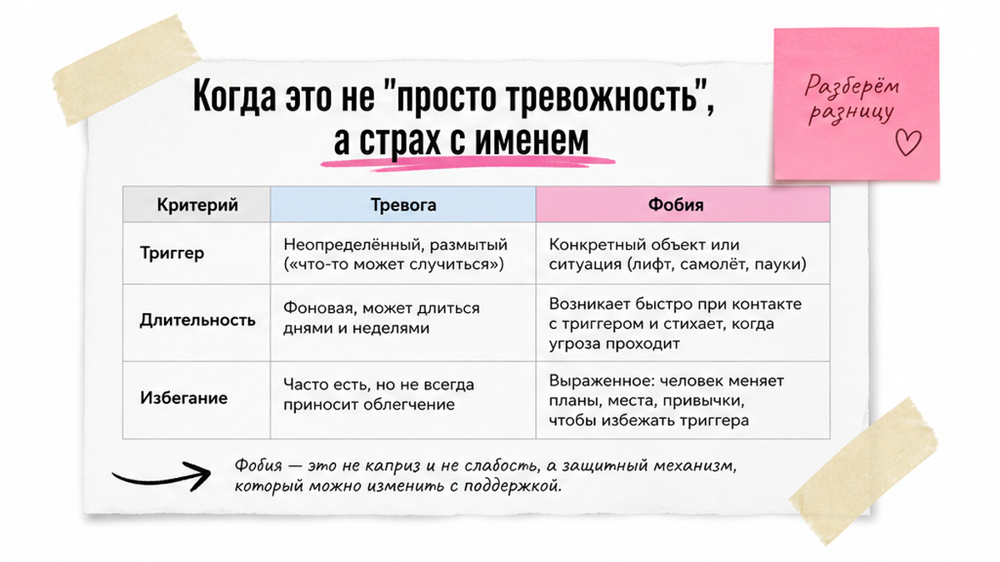
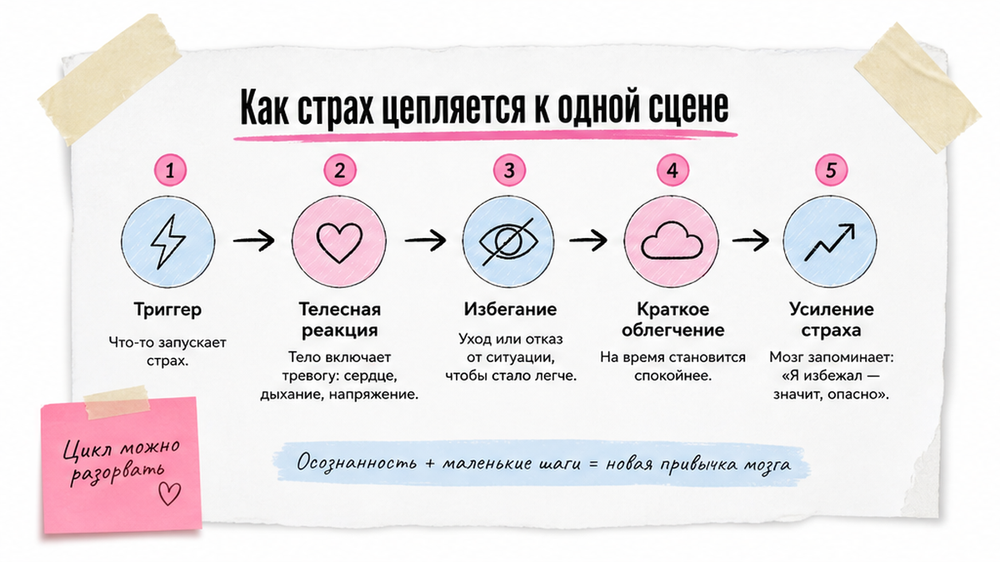
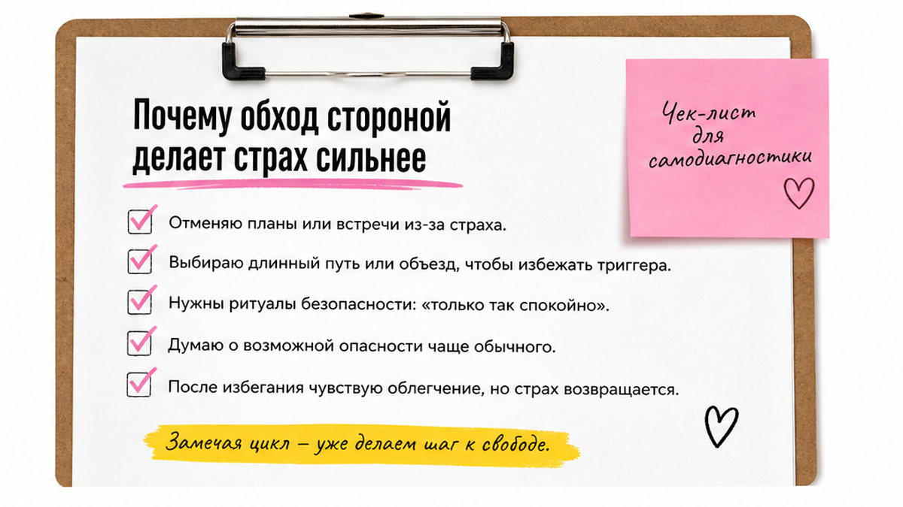

Марина снова открывает вкладку с билетами. Закрывает. Третий год подряд. Голова знает: самолёт безопасен. Тело не слушается. Сердце скачет от одной мысли о взлёте. Муж говорит: «Выпей что-нибудь и полети». Она кивает. Я такое слышу часто. Не потому что люди слабые. Сигнализация, которая когда-то защищала, теперь орёт на безопасные ситуации. Стыдно признаться близким. Поездки отменены. Лифт на работе — мимо. И ещё страх: психолог поставит ярлык. Или заставит смотреть страху в глаза без опоры.
Фобия — стойкий страх конкретной ситуации или объекта: лифта, полёта, иглы, толпы. Он сопровождается избеганием и мешает работе, отношениям или здоровью. От тревоги фобию отличает ясный триггер и длительность от шести месяцев. При таких признаках имеет смысл консультация психолога, в том числе онлайн.
Люди гуглят «фобия что это». Ищут не учебник. Ищут себя. На практике вижу, как путают фобию с тревогой. А «клаустрофобию» — со страхом замкнутого пространства и с брендом квестов.

Тревога часто без адреса. Мысли скачут. Трудно назвать одну причину. Фобия привязана к объекту. Самолёт. Лифт. Собака. Укол. Выступление. Типичная ошибка: читать про аэрофобию и думать, что у вас «просто тревога на всё». Если триггер называется одним словом — полёт, лифт, толпа — разговор уже другой.
На сессии спрашиваю: «Что пугает — самолёт или момент, когда двери закрываются?» Человек замирает. «Двери. Турбулентность. Некуда выйти». Вот она, конкретика. Специфические фобии встречаются у 7–12% людей за жизнь. Это не редкость. И не слабость.
| Что чувствуете | Тревога | Ситуативный страх | Фобия |
|---|---|---|---|
| Триггер | Размытый: «всё плохо», будущее, здоровье | Конкретный, но проходит после события | Один и тот же объект или сцена снова и снова |
| Длительность | Может быть хронической | Часы или дни | Обычно шесть месяцев и дольше |
| Избегание | Иногда, не всегда к одному объекту | Редко мешает жизни | Строите маршруты, отказы, отмены |
| Пример из жизни | «Не могу расслабиться на работе» | Страшно перед экзаменом, потом легче | Три года не летаете, хотя раньше летали |
Запишите три ситуации, которые обходите стороной. Список повторяется месяцами — это сигнал для самонаблюдения. Не для самообвинения. Подробнее о типах страхов — в материале о работе с фобиями.

Фобия редко появляется с нуля. Часто был эпизод. Застряли в лифте. Жёсткая турбулентность. Насмешка на людях. Больной укол в детстве. Мозг запомнил: «опасность = вот эта картинка». Потом достаточно мысли о триггере — и тело отвечает. Сердце. Ком в горле. Головокружение. Иногда паническая атака накрывает ещё до встречи с объектом страха.
Голова понимает. Тело — нет. ВОЗ давно рекомендует EMDR при посттравматическом стрессе. При фобиях — лифт, полёт — часто начинают с того, что вы мягко учитесь быть рядом со страхом. Под присмотром. В своём темпе. EMDR помогает, если за фобией травма или «застрявшее» напряжение в теле.

Друг говорит: «Просто не думай об этом». Вы киваете. На час легче. Потом страх возвращается громче. Я не люблю обещать чудеса. Но цикл избегания объясняет это без мистики:
Отменили поездку в центр — на час спокойнее. Мозг записывает: «толпа опасна». Самостоятельно «бросаться в лифт» не нужно. Со специалистом можно выстроить план — шаг за шагом, без героизма. Сейчас полезно записать: что сделали, чтобы не встретиться со страхом, и как быстро стало легче.
Специфическая фобия — один объект. Собака. Высота. Полёт. Социофобия — страх оценки на людях: говорить, есть, выступать. Агорафобию часто путают с боязнью улицы. На деле это страх ситуаций, из которых трудно быстро уйти. Плюс страх паники среди людей: метро, очередь, мост, автобус без остановки. В быту звучит так: «я никуда не поеду один».
Отказ от анализов из-за игл — не каприз. Это риск для здоровья. Самодиагноз не нужен. Список избеганий помогает на консультации. Если в поиске «клаустрофобия» ведёт на игровые квесты — не путайте игру с медицинским запросом. Страх замкнутого пространства — лифт, МРТ, маленькая комната без окна — другая история.
Обращение к специалисту — не приговор. Ориентиры без ярлыков. Страх держится шесть месяцев и дольше. Избегание мешает работе, отношениям, поездкам или процедурам. При одной мысли о триггере накрывает паника. Стыд мешает попросить помощи — хотя вы уже всё перепробовали сами.
Осознание иррациональности при фобии типично. Это не значит, что «само пройдёт». Психолог не ставит диагноз по переписке. И не заставляет смотреть страху в глаза без поддержки. Психиатр нужен при суицидальных мыслях, галлюцинациях, тяжёлых навязчивостях с ритуалами, полной неспособности есть или спать несколько дней.
EMDR — не гипноз. Память не стирается. На сессии вспоминаете тревожный образ. Я добавляю билатеральную стимуляцию — глаза, постукивания, звуки. Цель — снизить заряд в теле, чтобы триггер перестал «стрелять». При фобиях EMDR часто идёт вместе с бережным приближением к страшной сцене. Особенно если за страхом травматический эпизод.
На пробной встрече спрашивают: «Вы стираете воспоминание?» Нет. Память остаётся. Меняется интенсивность. Подробнее — на странице EMDR-терапии. Я не обещаю убрать фобию за одну сессию.
Что можно сделать сегодня без «героизма»:
Марина после такого дневника сказала мужу: «У меня не просто тревога. Страх взлёта и турбулентности больше трёх лет». Это уже результат. Ясность вместо стыда. Дневник можно вести в заметках телефона. Главное — честность. Не красивые формулировки.
Если можете вслух сказать: «у меня страх, привязанный к ___» — назвать избегания и увидеть влияние на жизнь — вы уже сделали важную работу. Без ожидания, что страх исчезнет за ночь.
Тревожное расстройство шире. Напряжение «ни о чём». Паника без ясного триггера. Фобия привязана к одной сцене и держится с избеганием. Диагноз ставит специалист. Не статья в блоге.
Да. Дневник. Разбор избегания. Подготовка к встрече со страхом в безопасном темпе. EMDR в адаптированном формате. Нужны стабильная связь и приватное место. Пробная 30-минутная встреча — чтобы проверить, комфортно ли вам со мной и с форматом.
Разговор помогает понять логику страха. EMDR дополнительно работает с телесным зарядом воспоминания. Структурированный протокол. Билатеральная стимуляция. Память не стирается — меняется интенсивность реакции.
Иногда да — но не в одиночку и не через силу. Со специалистом можно выстроить план: от маленьких шагов к более сложным. EMDR может облегчить путь, если страшный образ или травматический эпизод «застрял» в теле. Самостоятельно устраивать жёсткие «проверки на прочность» не рекомендую.
Нет. Это страх замкнутых пространств: лифт, МРТ, маленькая комната без окна. В поиске слово часто ведёт на квесты — не путайте игру с запросом о здоровье. Если избегаете реальных закрытых пространств полгода и больше — обсудите с психологом.
При мыслях о самоповреждении. Галлюцинациях. Полной неспособности есть или спать несколько дней. Тяжёлых навязчивостях с ритуалами на часы. Психолог работает с тревогой и фобиями. Психиатр нужен, когда вопрос о медикаментозной поддержке и острой безопасности.
Страх темноты у ребёнка часто проходит. Фобия мешает школе, сну, визитам к врачу. «Не бойся» редко помогает. Лучше обсудить с детским психологом, если страх держится и сужает жизнь.
Если после прочтения хочется не гуглить дальше, а просто поговорить — запишитесь ко мне на бесплатную 30-минутную пробную сессию. Записаться на пробную сессию.
Прошлое не обязано держать вас за горло. Иногда достаточно одного честного разговора. Чтобы перестать называть себя трусом. И начать называть страх по имени.
Ещё больше полезного — в Telegram и в МАКС.
Блог о психологии Натальи Морозовой, психолога, ЕМДР терапевта